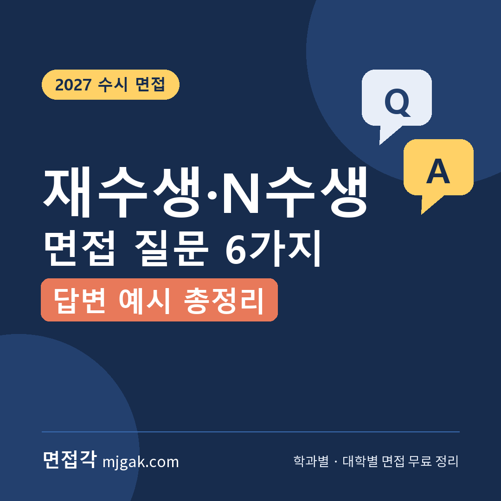
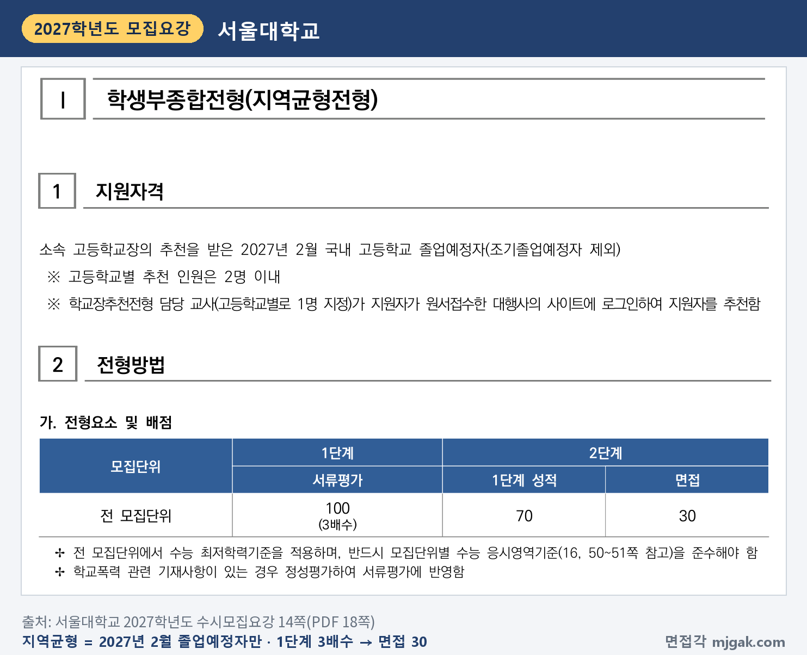
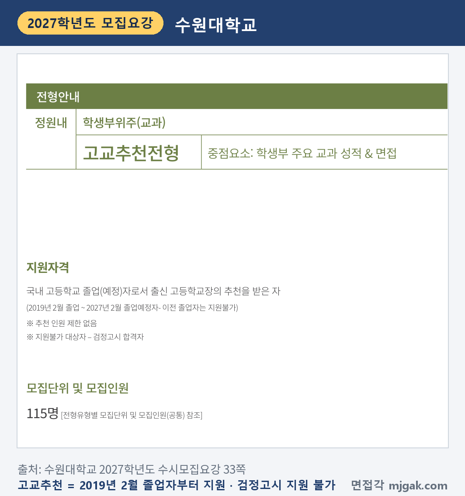
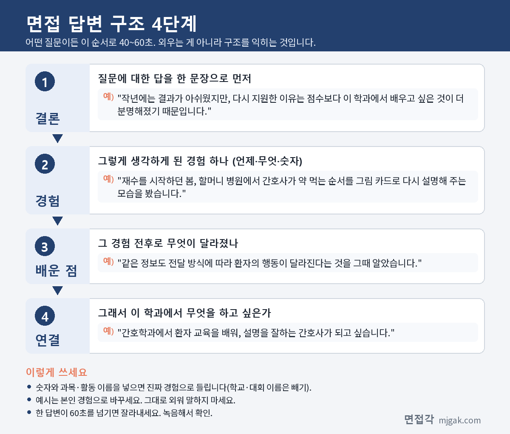

Ctrl+V (서식 유지됨)제목
본문 (이 영역 전체가 복사됩니다)
📷 여기에 이미지 넣기 — 썸네일 — thumb-repeat.png (대표 이미지로 지정)
2027학년도 수능은 2026년 11월 19일(목)에 끝났고, 그 뒤로도 수시 면접 일정이 이어집니다. 이 글에서 다루는 전형만 해도 을지대 EU면접형이 11월 21일(토), 서울대 일반전형(음악대학 제외)이 11월 27일(금)부터, 수원대 고교추천전형이 11월 27일(금)~29일(일), 서울대 지역균형전형이 12월 4일(금)부터, 경희대 네오르네상스전형과 건국대 KU자기추천전형이 12월 5일(토)·6일(일)에 면접을 봅니다. 재수생·N수생은 고3과 같은 면접장에 들어가지만, 준비할 것이 조금 다릅니다. 고교 때 기록을 1~2년이 지난 지금 설명해야 하고, 졸업 뒤의 시간은 내 말로 전해야 합니다. 이 글은 졸업생이 지원할 수 있는 전형인지 확인하는 법, 모집요강에 졸업생과 관련해 적힌 것, 재수생 면접 질문 6가지와 답변 예시, 수능 뒤 면접까지 준비 순서를 정리했습니다. 질문은 면접각이 정리한 재수·N수생 유형 예상 질문이고, 대학이 공개한 질문이 아닙니다. 수능을 마친 재수생·N수생과 반수생, 그리고 이 시기를 함께 보내는 학부모님이 읽으시면 됩니다.
1. 먼저 확인: 졸업생이 지원할 수 있는 전형인가
N수생 면접 준비의 첫 단계는 질문이 아니라 지원자격 문장입니다. 원서를 낼 때 확인했겠지만, 같은 대학 안에서도 전형마다 졸업연도 조건이 다르고, '학교장 추천'이라는 이름만으로는 졸업생 지원 여부를 알 수 없습니다. 2027학년도 모집요강 다섯 곳에서 확인한 문장입니다.
서울대학교 학생부종합 지역균형전형의 지원자격은 "소속 고등학교장의 추천을 받은 2027년 2월 국내 고등학교 졸업예정자(조기졸업예정자 제외)"입니다(14쪽). 졸업생은 지원할 수 없습니다. 1단계 서류평가 100%로 3배수를 뽑고, 2단계는 1단계 성적 70에 면접 30입니다. 같은 서울대라도 일반전형은 "고등학교 졸업자(2027년 2월 졸업예정자 포함)"이고, 고등학교 졸업학력 검정고시 합격자도 포함됩니다(20쪽).
📷 여기에 이미지 넣기 — 캡처 1 — 서울대학교 2027학년도 수시모집요강 14쪽(PDF 18쪽): snu-2027-repeat-local.png
수원대학교 학생부교과 고교추천전형은 학교장 추천 전형이지만 졸업생도 받습니다. 지원자격은 출신 고등학교장의 추천을 받은 국내 고교 졸업(예정)자로, "2019년 2월 졸업 ~ 2027년 2월 졸업예정자"이고 그 이전 졸업자와 검정고시 합격자는 지원할 수 없습니다(33쪽). 학생부 60%에 면접 40%(명목 비율, 실질 반영비율은 51.7 : 48.3)를 합산하고, 지원자 전원이 수능 이후 11월 27일(금)~29일(일)에 면접을 봅니다(33·34쪽).
📷 여기에 이미지 넣기 — 캡처 2 — 수원대학교 2027학년도 수시모집요강 33쪽: suwon-2027-repeat-reco.png
연도 아래쪽에 선을 그은 곳도 있습니다. 한국항공대학교 학생부종합 미래인재전형은 2006년 2월 이전 고교 졸업자(2006년 2월 졸업자 포함)가 지원할 수 없고, 검정고시 출신자는 2006년 2월 이후 고교 졸업 학력을 취득한 사람만 지원할 수 있습니다(25쪽). 반대로 경희대학교 학생부종합 네오르네상스전형의 지원자격은 "고등학교 졸업(예정)자 또는 법령에 따라 이와 같은 수준 이상의 학력이 있다고 인정되는 자"로, 졸업연도 조건이 적혀 있지 않습니다(38쪽). 을지대학교 학생부종합 EU면접형도 고교 졸업(예정)자 또는 동등 이상 학력 인정자가 지원할 수 있고, 동등 학력 인정자는 학교생활기록부 대체 서식을 따로 내야 합니다(17쪽).
정리하면 이 글에서 본 모집요강에서는 졸업연도 조건이 "○년 ○월 졸업 ~ 2027년 2월 졸업예정자"(지원자격), "○년 ○월 이전 졸업자 지원 불가"(지원이 불가한 자) 같은 문장으로 적혀 있었습니다. 다음 학년도에 다시 지원한다면 그해 모집요강에서 이 문장부터 확인하세요. 조건은 해마다 바뀔 수 있습니다.
2. 면접관이 N수생에게 확인하려는 것
이 글에서 본 모집요강에는 졸업생에게만 따로 적용하는 면접 평가 항목이 없었습니다. 이 글의 전형에서는 졸업생도 같은 전형의 평가 항목표로 면접을 봅니다. 대신 졸업생과 관련해 모집요강에 적힌 것이 세 가지 있습니다.
첫째, 학생부를 어디까지 보느냐입니다. 건국대는 학생부종합 서류평가의 평가 대상을 "(졸업예정자) 3학년 1학기까지, (졸업자) 3학년 2학기까지"로 적었고(69쪽), 광운대도 서류종합평가에서 "졸업생의 경우 3학년 2학기까지 평가에 반영"한다고 밝혔습니다(44쪽). 두 대학에서는 고3 지원자에게는 아직 없는 3학년 2학기 기록이 졸업생에게는 평가 자료가 됩니다.
둘째, 면접은 제출서류를 확인하는 자리입니다. 서울대 지역균형전형은 "제출서류를 토대로 서류내용을 확인하고 기본적인 학업 소양을 평가"하고(의과대학 제외, 15쪽), 건국대 KU자기추천전형의 면접내용은 "서류 진위여부 확인 및 인성평가"이며(72쪽), 을지대 EU면접형은 제출서류를 기반으로 서류 진위 여부를 종합적으로 검증한다고 적었습니다(17쪽).
셋째, 말하면 안 되는 것이 정해져 있습니다. 건국대는 학교생활기록부 기재금지 항목을 면접에서 언급하면 평가에서 불이익을 받을 수 있다고 적었는데, 그 목록에 "모의고사·전국연합학력평가 성적"과 "구체적인 특정 대학명, 기관명(…), 상호명, 강사명 등"이 들어 있습니다(72쪽). 을지대는 성명, 수험번호, 출신고교명, 고교유형, 부모 직업을 언급하지 말라고 안내합니다(17쪽). 재수 기간 이야기를 할 때 학원 이름, 강사 이름, 모의고사 점수가 자연스럽게 섞이기 쉬우니 미리 걸러 두세요.
평가 항목 이름도 확인해 두면 질문 준비가 쉬워집니다. 경희대 네오르네상스는 공통질문(지원동기, 가치관 및 인성 등)과 개인 서류확인 면접으로, 인성 50%(가치관 및 태도, 의사소통능력)와 전공적합성 50%(전공 기초소양, 논리적 사고력)를 봅니다(62쪽). 을지대 EU면접형은 계열(전공) 적합성 30%, 발전 가능성 30%, 인성 20%, 자세 및 태도 20%이고(17쪽), 수원대 고교추천은 인성(1분 이내 자기소개), 학업계획 및 포부, 창의력 및 사고력, 전공 적합성을 평가항목으로 적었습니다(34쪽).
3. 재수생 면접 질문 6가지와 답변
예시 답변은 답변 구조를 보여 주기 위한 가상의 N수생 예시입니다. 그대로 외우지 말고 본인 경험으로 바꿔 쓰세요. 공통 원칙은 하나입니다. 재수한 이유와 지난 1년의 변화를 따로 준비하지 말고 한 줄로 이어지게 만드세요.
▶ 질문 1. 재수(N수)를 결심한 이유는 무엇인가요?
왜 묻나: 다시 지원한 이유가 이 학과와 어떻게 이어지는지를 묻는 질문입니다. 경희대 공통질문의 "지원동기", 을지대의 "계열(전공) 적합성(계열(전공) 관련 활동과 진로계획)", 수원대의 "학업계획 및 포부"가 닿는 자리입니다.
답변 구조: 결과가 아쉬웠다는 사실은 짧게 인정 → 재수 기간에 학과 선택이 더 분명해진 계기 하나 → 그 계기에서 알게 된 것 → 이 학과에서 하고 싶은 것.
답변 예시:
"작년에는 결과가 아쉬웠지만, 다시 지원한 이유는 점수보다 이 학과에서 배우고 싶은 것이 더 분명해졌기 때문입니다. 재수를 시작하던 봄, 할머니 병원에서 간호사가 약 먹는 순서를 그림 카드로 다시 설명해 주는 모습을 봤습니다. 같은 정보도 전달 방식에 따라 환자의 행동이 달라진다는 것을 그때 알았습니다. 간호학과에서 환자 교육을 배워, 설명을 잘하는 간호사가 되고 싶습니다."
주의: "점수가 아쉬워서"만 반복하거나, 작년에 떨어진 대학·학과를 평가하지 마세요. 학과 이름이 빠진 재수 이유는 어느 대학에서나 같은 답이 됩니다.
▶ 질문 2. 지난 1년(공백기) 동안 무엇을 했고, 무엇이 가장 달라졌나요?
왜 묻나: 고교 졸업 뒤의 1년을 묻는 질문입니다. 을지대의 "발전 가능성(창의적 문제해결력, 자기주도성)"과 경희대의 "가치관 및 태도"가 닿습니다.
답변 구조: 달라진 것 한 가지 → 작년의 상태 → 바꾼 방법(언제, 무엇을, 얼마나) → 지금 달라진 결과.
답변 예시:
"가장 달라진 것은 공부를 점검하는 방식입니다. 작년에는 강의를 듣는 시간이 곧 공부라고 생각했습니다. 올해는 매일 저녁 그날 틀린 문제 하나를 골라 빈 종이에 풀이를 처음부터 다시 써 보고, 막힌 줄에 표시했습니다. 석 달쯤 지나자 제가 어디서 막히는지 스스로 찾을 수 있게 됐습니다. 대학에서도 모르는 부분을 먼저 찾아 질문하는 방식으로 공부하겠습니다."
주의: 1년을 "공부만 했습니다"로 비우지 마세요. 공부 방법의 변화도 충분한 답입니다. 학원 이름, 강사 이름, 모의고사 점수는 빼고 말하세요(건국대 기재금지 항목, 72쪽).
📷 여기에 이미지 넣기 — 이미지 1 — 제미나이 생성: 늦가을 도서관 창가에서 손때 묻은 플래너와 문제집을 펴 두고 소리 내어 답변을 연습하는 N수생(실사) / "제미나이 프롬프트 1" · gem-repeat-1.png
(AI로 만든 이미지로, 실제와 다를 수 있습니다)
▶ 질문 3. 학생부에 적힌 ○○ 활동을 지금 다시 보면 어떤 의미가 있나요?
왜 묻나: 고교 때 기록을 지금 시점에서 설명해 달라는 질문입니다. 건국대의 "서류 진위여부 확인", 을지대 "자세 및 태도"의 "제출서류 진위여부", 서울대 지역균형의 "서류내용을 확인"이 닿는 자리입니다.
답변 구조: 당시에 생각한 의미 → 지금 다시 본 의미 → 재수 기간에 그 연결을 알게 된 계기 → 지원 학과.
답변 예시:
"2학년 때 학급 분리배출 캠페인을 당시에는 그냥 반 행사로 생각했습니다. 지금 다시 보니 친구들에게 왜 분리배출이 귀찮은지 먼저 묻고 방법을 정했던, 문제를 먼저 정의해 본 첫 경험이었습니다. 재수 기간에 환경 기사를 요약하면서, 정책도 사람들의 행동을 먼저 조사한 뒤 만든다는 공통점을 발견했습니다. 환경공학과에서 그 조사 방법을 제대로 배우고 싶습니다."
주의: 학생부에 없는 내용을 새로 꾸미지 마세요. 졸업생은 3학년 2학기 기록까지 평가 자료가 될 수 있으니(건국대 69쪽, 광운대 44쪽) 그 학기의 세부능력 및 특기사항도 다시 읽어 두세요.
▶ 질문 4. 작년 결과를 어떻게 받아들였나요? 가장 힘들었던 순간은 언제였나요?
왜 묻나: 실패 뒤의 태도를 묻는 질문입니다. 경희대의 "가치관 및 태도", 을지대의 "인성(성실성과 규칙준수)"이 닿습니다.
답변 구조: 힘들었던 순간을 한 문장으로 → 그때 한 행동 → 그 행동으로 알게 된 것 → 대학에서 이어 갈 습관.
답변 예시:
"결과를 확인한 뒤 며칠은 아무것도 손에 잡히지 않았습니다. 그래서 지난 1년 공부 기록을 꺼내 과목별로 시간을 어디에 썼는지 표로 정리했고, 문제를 푼 시간보다 강의를 본 시간이 훨씬 많았다는 것을 확인했습니다. 결과를 운 탓으로 돌리기보다 원인을 찾는 데 쓰니 다시 시작할 수 있었습니다. 대학에서도 막힐 때 기록부터 보는 습관을 이어 가겠습니다."
주의: 감정을 길게 말하기보다 대처 행동을 중심에 두세요. 누구를 탓하는 문장은 빼세요.
▶ 질문 5. 수능은 어땠나요? 결과가 원하는 대로 나오지 않으면 어떻게 할 건가요?
왜 묻나: 수능이 끝난 뒤 보는 면접이라 준비해 두면 좋은 질문입니다. 수원대의 "학업계획 및 포부", 경희대의 "전공 기초소양"이 닿습니다. 수능 성적은 12월 11일(금)에 통지되니, 이 글의 전형 면접은 모두 성적 통지 전입니다.
답변 구조: 결과와 관계없이 정해 둔 계획 → 입학 전까지 할 공부 → 입학 후 첫 학기 → 재수 기간에 익힌 방법.
답변 예시:
"성적은 아직 나오지 않아서, 결과와 관계없이 할 일을 먼저 정해 두었습니다. 입학 전까지 생명과학의 유전 단원을 다시 정리하고, 입학하면 1학년 때 일반생물학과 일반화학을 기초부터 다지겠습니다. 재수 기간에 계획을 주 단위로 쪼개 지켜 본 경험이 있어서, 대학 첫 학기도 같은 방식으로 관리할 수 있다고 생각합니다."
주의: 가채점 점수나 등급을 늘어놓기보다 계획으로 답하세요. "또 도전하겠습니다"만으로 끝내지 마세요.
▶ 질문 6. 나이가 어린 동기들과 함께 지내야 합니다. 어떻게 하겠습니까?
왜 묻나: 공동체 적응을 묻는 질문입니다. 을지대의 "인성(협업과 소통역량)", 경희대의 "의사소통능력(공감 능력, 표현력)"이 닿습니다.
답변 구조: 나이보다 역할로 관계를 만들겠다는 결론 → 재수 기간의 경험 → 배운 태도 → 입학 후 계획.
답변 예시:
"나이보다 역할로 관계를 만들겠습니다. 재수 기간에 독서실 스터디에서 저보다 어린 친구들과 공부했는데, 제가 먼저 일정을 정리하고 약속을 지키자 서로 묻고 답하는 분위기가 생겼습니다. 선배처럼 굴기보다 같은 자리에서 먼저 돕는 사람이 신뢰를 얻는다는 것을 배웠습니다. 입학하면 학과 스터디에서 자료를 먼저 준비하는 사람이 되겠습니다."
주의: "나이는 상관없습니다"로 짧게 끝내거나 방어적으로 답하지 마세요.
4. 답변은 이 4단계로
어떤 질문이든 결론 → 경험 → 배운 점 → 연결 순서로 40~60초 안에 말하면 됩니다. 서울대 지역균형전형(의과대학 제외, 15쪽), 경희대 네오르네상스전형(62쪽), 건국대 KU자기추천전형(72쪽)은 면접 시간이 10분 내외이고, 수원대 고교추천은 학생 3명 이내의 그룹면접이고, 1분 이내 자기소개로 시작합니다(34쪽). 아래 도식은 질문 1(재수를 결심한 이유)의 예시를 4단계로 나눈 것입니다.
📷 여기에 이미지 넣기 — 도식 — structure-repeat.png
5. 수능 뒤 면접까지 준비 순서
아래 순서는 이 글이 제안하는 방법이고, 대학이 정한 기준이 아닙니다.
1단계, 일정과 공지 확인. 내 전형의 1단계 발표일, 면접일, 입실 시각, 장소를 한 장에 적습니다. 서울대는 일반전형(음악대학 제외) 1단계 발표가 11월 20일(금) 18시 이후, 지역균형전형이 11월 27일(금) 18시 이후이고, 1단계 합격자는 2단계 전형료를 기간 안에 내야 면접을 볼 수 있습니다(1·2·13쪽). 경희대 네오르네상스는 11월 25일(수) 18시 발표, 12월 2일(수) 18시 고사장 확인입니다(39쪽).
2단계, 학생부 다시 읽기. 졸업 뒤 처음 펴 보는 학생부라면 3학년 2학기까지 처음부터 읽고, 활동마다 '그때 생각한 의미'와 '지금 다시 본 의미'를 한 줄씩 적습니다. 질문 3의 재료가 됩니다.
3단계, 질문 1과 2를 한 줄로 잇기. 재수한 이유와 1년 동안 달라진 것이 같은 이야기로 이어지는지 소리 내어 확인합니다.
4단계, 걸러 내기. 답변 녹음을 들으며 학원 이름, 강사 이름, 모의고사 점수, 출신 고교가 드러나는 말을 지웁니다.
5단계, 시간 재고 모의면접. 지원 대학 면접 시간에 맞춰 가족이나 친구에게 질문 순서를 섞어 물어 달라고 합니다. 그룹면접이라면 다른 사람 답을 듣는 동안 내 첫 문장을 정리하는 연습도 합니다.
전날, 새 답변을 만들지 않습니다. 수험표·신분증, 대학 안내에 적힌 준비물과 복장 규정을 확인하고 일찍 잡니다. 을지대는 교복 대신 단정한 사복을 입으라고 안내했습니다(17쪽).
6. 자주 묻는 것들
Q. 검정고시 출신도 면접 전형에 지원할 수 있나요?
A. 전형마다 다릅니다. 서울대 일반전형은 검정고시 합격자를 지원자격에 포함하고(20쪽), 을지대 EU면접형은 지원할 수 있고, 학교생활기록부 대체 서식을 따로 내야 합니다(17·18쪽). 광운대 광운참빛인재전형Ⅰ(면접형)은 검정고시 출신자에 한해 학교생활기록부 대체 서식(본교양식)과 관련 증빙자료로 대체할 수 있습니다(44쪽). 반면 수원대 고교추천전형은 검정고시 합격자가 지원할 수 없습니다(33쪽).
Q. 반수생(대학에 다니면서 다시 지원)도 괜찮나요?
A. 지원자격과 별개로 입학 뒤 학적을 확인하세요. 서울대는 학칙에 따라 이중학적이 금지되어 입학 후 둘 이상의 대학에 동시에 재학 또는 휴학할 수 없고, 위반하면 합격과 입학을 취소한다고 적었습니다(11쪽). 면접에서는 다니던 대학 이름을 말하지 마세요. 건국대 기재금지 항목에 "구체적인 특정 대학명"이 있습니다(72쪽).
Q. 졸업한 지 오래됐는데, 학생부 성적도 3학년 2학기까지 보나요?
A. 서류평가와 교과 성적은 구분해서 보세요. 건국대 학생부종합 서류평가와 광운대 서류종합평가는 졸업자의 3학년 2학기까지 평가합니다(건국대 69쪽, 광운대 44쪽). 반면 수원대 고교추천전형의 교과 성적은 졸업자와 졸업예정자 모두 3학년 1학기까지 반영합니다(33쪽).
Q. 면접에서 재수했다는 사실을 말해도 되나요?
A. 이 글에서 본 블라인드 규정은 성명·수험번호·출신고교·부모 직업 같은 개인정보(을지대 17쪽)와 기재금지 항목(건국대 72쪽)을 막고, 재수 사실 자체를 말하지 말라는 문장은 찾지 못했습니다. 재수 기간 이야기는 학원·강사 이름과 점수를 뺀 행동 중심으로 하세요.
7. 면접 전 체크리스트
□ 내 전형의 지원자격 문장(졸업연도 조건)을 모집요강에서 다시 읽었다
□ 재수한 이유를 학과와 이어 40~60초 안에 말할 수 있다
□ 지난 1년 동안 달라진 것 한 가지를 구체적인 행동으로 말할 수 있다
□ 학생부를 3학년 2학기까지 다시 읽고, 활동마다 '지금 다시 본 의미'를 적었다
□ 답변에서 학원·강사 이름, 모의고사 점수, 출신 고교를 뺐다
□ 수능 결과와 관계없는 입학 전·후 공부 계획을 말할 수 있다
□ 면접일·입실 시각·장소, 2단계 전형료 납부 여부(해당 대학)를 확인했다
8. 함께 보면 좋은 글
▷ 마이스터고·특성화고 졸업(예정)자 대입 면접 질문 6가지와 답변 예시
재수생 면접은 1년을 변명하는 자리가 아니라, 그 1년이 지원 학과로 가는 길에 어떻게 이어졌는지 설명하는 자리입니다.
※ 이 글의 지원자격·전형방법·면접 방식·일정은 서울대학교, 수원대학교, 한국항공대학교, 경희대학교, 을지대학교, 건국대학교, 광운대학교의 2027학년도 수시모집요강에서 인용했고, 괄호 안 쪽수는 각 모집요강에 인쇄된 쪽수입니다. 수능 성적 통지일은 면접각 수능 페이지에 정리한 한국교육과정평가원 자료에서 옮겼습니다. 예상 질문 6가지는 면접각이 정리한 재수·N수생 유형 질문이며 대학이 공개한 질문이 아니고, 답변 예시는 가상의 예시입니다. 지원자격과 일정은 바뀔 수 있으니 지원 대학 입학처 공지를 꼭 확인하세요.
면접각은 2027학년도 대학별 면접 정보와 학과별 면접 질문·답변 예시를 무료로 정리한 사이트입니다. 재수·N수생, 검정고시 출신, 특성화고·마이스터고처럼 지원 유형별로 자주 나오는 질문과 답변 틀도 모아 두었습니다. 회원가입 없이 바로 볼 수 있습니다.
태그 (#은 에디터가 자동으로 붙이므로 그대로 붙여 넣어도 됩니다)
넣을 이미지 목록 (docs/promo/img 폴더)




제미나이 프롬프트 1 — 늦가을 도서관 창가에서 손때 묻은 플래너와 문제집을 펴 두고 소리 내어 답변을 연습하는 N수생(실사) (4:3) — 제미나이에 그대로 붙여 넣어 이미지를 만드세요